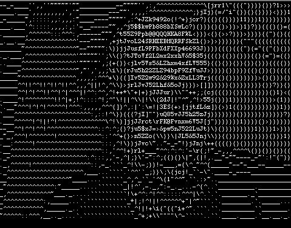
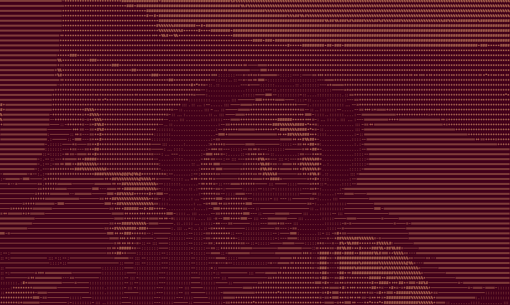

ASCII Webcam
Proposal last updated: 11/3/22
Team Members
I will be working alone.

Application Overview
Takes the users webcam view or an image specified by the user as its input
and displays an ASCII text "drawing". The final result should look similar
to the image on the right →
This is an illusion created by the nature of monospace fonts.
Characters all take up the same amount of space regardless of pixel density.
Becuase of this, a very dense character like "@" can represent a white "pixel" of
the image and "." or even a space character can represent black. (The inverse would
be true for an environment with a white background and black text)
If you can't make out the image, try to squint your eyes a bit or zoom out
slightly. It should resemble a bald man with a beard.
Technology Overview
-
Python language
-
os module for selecting image files
-
cv2 module for accessing camera and editing image
-
Most likely based on terminal
Feature List
-
Performs operations on the image to make it easier to translate into ASCII.
This would include changing the image to a lower resolution, making it black
and white, and likely other steps that are undertermined at this time.
-
"Zones" of the image are assigned a value based on the average
brightness of the pixels in each zone.
-
Each ASCII character in a predermined set is assigned to a range of brightness
values. The correct character is displayed in each zone based on the corresponding
average brightness value of that zone.
Future Feature List
-
Toggle that lets the user tell the program whether their terminal background is
light or dark, then uses that information to make the image more legible by
inverting the order of either the ASCII character list or their brightness
assignments.
-
Instead of just a single frame/image turned into one drawing, process live video
feed from the webcam. Zones and ASCII characters are updated at a consistent
framerate until the user terminates the program.
Basic Technical Features
-
Python and external Python libraries
-
Source code hosted on GitHub
-
I might attempt to turn this into an Azure web app. Would be implemented
through Pyscript.
It might work or it might not, but either way I do want to continue using Python
and not Javascript because I am much more familiar with the former.
Advanced Technical Features
-
If there is any difficulty with formatting the text I might have to use a method
other than command line
-
The use of the cv2 / OpenCV module
Conclusion / After Completion
Updated: 12/14/22

What was delivered?
I did all initial testing with the webcam but the conversion worked differently for the
image files. I think they are different object types in cv2, and I didn't think I'd have
enough time to read any more of the documentation and write a new function that could
process the image objects correctly. In the project's current state, providing an adequate
image path will display the image in a new window but it will not be altered in any way.
I also added a theme/color changer pair of functions for the curses terminal window and
persistence for the selected theme. It reads and writes from a text file to save the last
selected theme and loads it on program start.
What would be the next added features?
Probably the image/video file compatibility. Maybe a different type of UI, like visually
highlighting selected options with a different color (based on the theme) and navigating
with arrow keys/enter/escape instead of pressing numbers. For the static images it could
also be set up to write the output to a text file.
Contact info
Lewis email: michaeldszostak@lewisu.edu
Personal email: mszo@tuta.io
Discord: wikey#4133